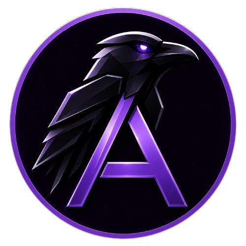
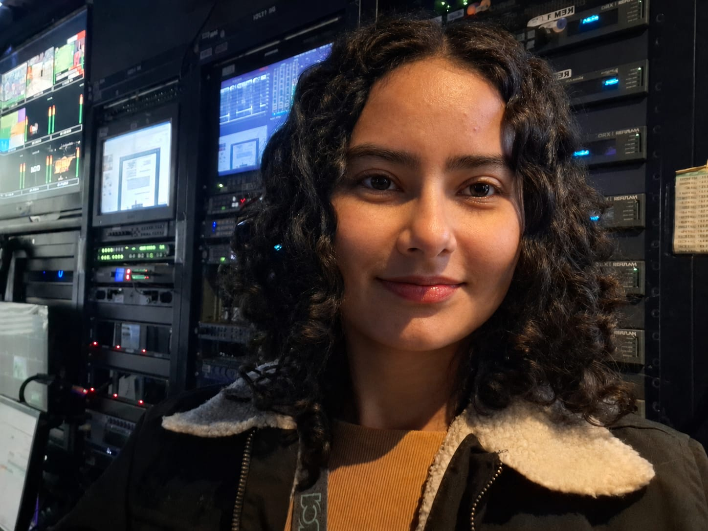
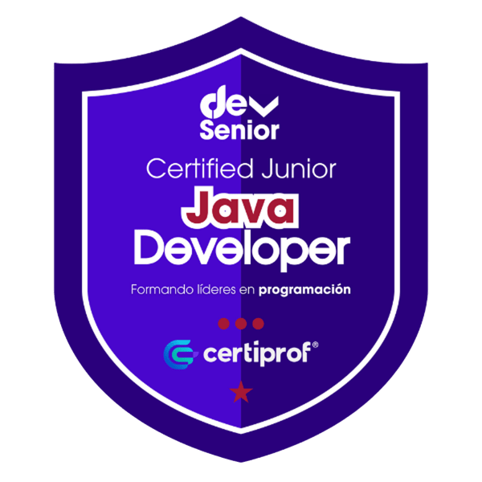

Asgard Pets - Aurora
Aplicación web para administrar una tienda de mascotas y una fundación de rescate animal.

Estudiante de Ingeniería de Software
Soy Angélica Sáenz, estudiante de Ingeniería de Software y técnica en sistemas. Me caracterizo por ser una persona con muchas ganas de aprender, comprometida con mi crecimiento profesional y apasionada por la tecnología. Actualmente estoy fortaleciendo mis conocimientos en desarrollo de software, especialmente en Java, Spring Boot y desarrollo web, mientras construyo proyectos que me permiten aplicar lo aprendido y seguir desarrollando mis habilidades.

Java
Spring Boot
HTML5
CSS3
Git
GitHub
AWS
Aplicación web para administrar una tienda de mascotas y una fundación de rescate animal.
Mayo 2024 - Actualidad
Abril 2022 - Junio 2024
Septiembre 2021 - Marzo 2022
Corporación Universitaria Iberoamericana
Agosto 2023 - Actualidad
En curso
SENA
Marzo 2021 - Abril 2022
Graduada

Estoy en constante aprendizaje como estudiante de Ingeniería de Software y siempre abierta a nuevas oportunidades para seguir creciendo profesionalmente.